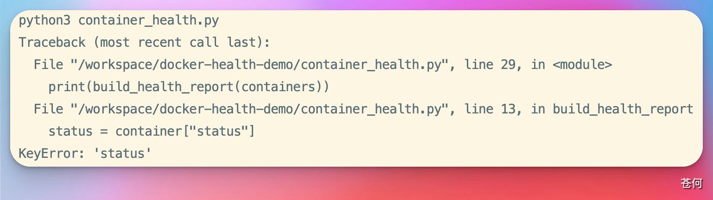
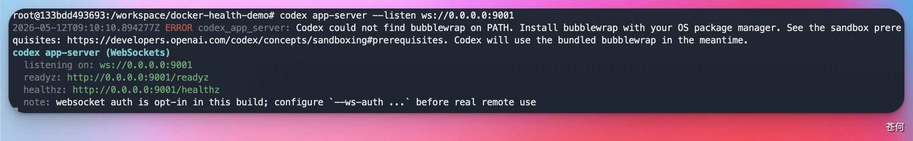
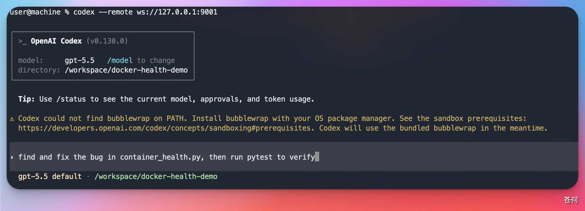
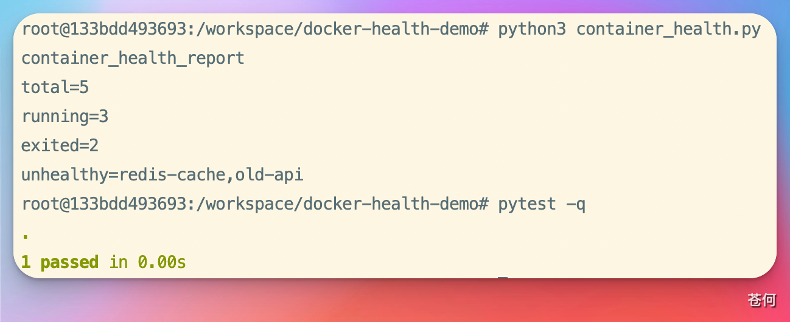

你的代码跑在云服务器上，本地一行代码都没有——Codex 照样能帮你找到 Bug、修好它、跑通测试。这篇文章手把手带你走一遍完整流程。
一、背景：Codex 的远程模式是什么？#
我们平时用 Codex CLI，默认都是在本地项目里跑。你的代码在 Mac 上，Codex 就在 Mac 上帮你改。
但现实中有一种很常见的场景：代码不在你电脑上，在远程服务器里。
比如：
- 项目部署在云服务器的 Docker 容器里
- 你只有 SSH 权限，本地没有源码
- 线上环境出了 Bug，需要直接在远程定位和修复
Codex 的 远程模式（Remote Mode） 就是干这个的——你在本地敲命令，Codex 在远程服务器上读代码、改代码、跑测试，整个过程你的 Mac 上不需要克隆任何仓库。
架构很简单：
┌──────────────────┐ SSH 隧道 ┌──────────────────────────┐
│ 你的 Mac 本地 │ ◀───────────────────▶ │ 远程服务器（云主机） │
│ codex --remote │ 端口转发 9001 │ codex app-server │
│ （TUI 界面） │ │ （代码 + 运行环境） │
└──────────────────┘ └──────────────────────────┘本地只负责"表达需求、审查结果"，远程负责"代码、依赖、运行"。AI 在两者之间执行可验证的步骤。
二、实战场景：容器里的 Python 脚本报错了#
项目介绍#
我在腾讯云服务器上有一个 Docker 容器 codex-demo，里面有一个小项目 docker-health-demo，用来生成容器健康检查报告。
项目结构：
/workspace/docker-health-demo/
├── containers.json # 模拟的容器状态数据
├── container_health.py # 健康检查脚本（有 Bug）
└── test_container_health.py # pytest 测试文件问题复现#
直接运行脚本：
python3 container_health.py💥 报错：
KeyError: 'status'
跑测试也一样挂：
pytest -qFAILED - KeyError: 'status'问题很明显：代码里读了一个叫 status 的字段，但数据文件里这个字段叫 state。一个字段名写错了。
对人来说这是 30 秒的事；这篇文章的重点是演示 Codex 如何远程完成整个流程。
三、完整操作步骤#
第 1 步：在远程服务器上启动 app-server#
SSH 登录你的云服务器，进入容器，在项目目录下启动 Codex 的 app-server：
ssh root@你的服务器IP
docker exec -it codex-demo bash
cd /workspace/docker-health-demo
codex app-server --listen ws://0.0.0.0:9001看到类似这样的输出就说明启动成功了：
codex app-server (WebSockets)
listening on: ws://0.0.0.0:9001
readyz: http://0.0.0.0:9001/readyz
healthz: http://0.0.0.0:9001/healthz
⚠️ 注意：不要加
--ws-auth参数。通过 SSH 隧道连接时，安全性由 SSH 本身保证，不需要额外的 WebSocket 认证。
第 2 步：本地建立 SSH 端口转发#
在 Mac 上新开一个终端窗口，建立 SSH 隧道把远程的 9001 端口映射到本地：
ssh -N -L 9001:127.0.0.1:9001 root@你的服务器IP输入密码后没有任何输出是正常的——它就是一条安静的隧道，挂着就行。
可以验证一下隧道是否通畅：
curl -i http://127.0.0.1:9001/healthz返回 HTTP/1.1 200 OK 就说明隧道没问题。

第 3 步：本地登录 Codex（仅首次需要）#
如果你从来没在本地登录过 Codex CLI，需要先完成一次登录：
codex auth login它会在浏览器打开 OpenAI 的登录页面，登录你的 ChatGPT 账号即可。登录成功后终端会显示 Successfully logged in。
💡 这一步只需要做一次，之后登录凭证会缓存在本地。
第 4 步：连接远程项目#
再开一个终端窗口，输入：
codex --remote ws://127.0.0.1:9001如果一切顺利，你会看到 Codex 的 TUI 界面，目录显示的是远程容器里的路径：
>_ OpenAI Codex (v0.130.0)
model: gpt-5.5 /model to change
directory: /workspace/docker-health-demo
到这里，远程连接就成功了。你本地的 Codex 已经"站在"远程服务器的项目目录里了。
第 5 步：让 Codex 修复 Bug#
在 Codex 的输入框里输入提示词：
find and fix the bug in container_health.py, then run pytest to verify
Codex 会自动完成以下步骤：
- 读取
container_health.py和containers.json - 发现字段名不匹配：代码里用了
"status"，数据里是"state" - 修改代码
- 运行
pytest -q验证修复结果
修复完成后的输出：
python3 container_health.pycontainer_health_report
total=5
running=3
exited=2
unhealthy=redis-cache,old-apipytest -q1 passed in 0.00s
Done。一个远程 Bug 修复的完整闭环。
五、总结#
Codex 远程模式的核心价值：你不需要把代码拉到本地，就能让 AI 直接在远程环境里帮你定位和修复问题。
整个流程拆开来看就三件事：
- 远程启动
codex app-server - 本地 SSH 隧道转发端口
- 本地
codex --remote接入
一旦连通，体验和本地使用 Codex 完全一致——读文件、改代码、跑测试，全部在远程执行。
这对于以下场景特别有用：
- 线上服务出 Bug，需要快速定位
- 开发环境在远程 GPU 服务器上
- 多人协作时需要直接在共享服务器上改代码
- 本地机器性能不够，依赖装不全
远程模式目前还是 Alpha 阶段，体验上还有一些粗糙的地方（比如 WebSocket 连接偶尔会降级为 HTTPS），但核心功能已经可用。未来随着 Codex 的迭代，这个能力只会越来越稳。